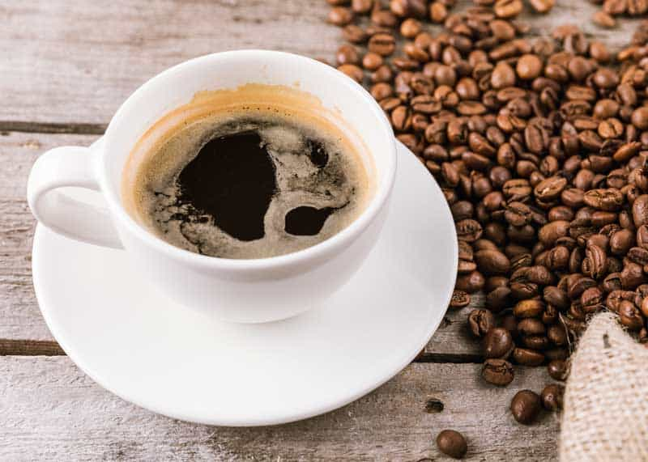
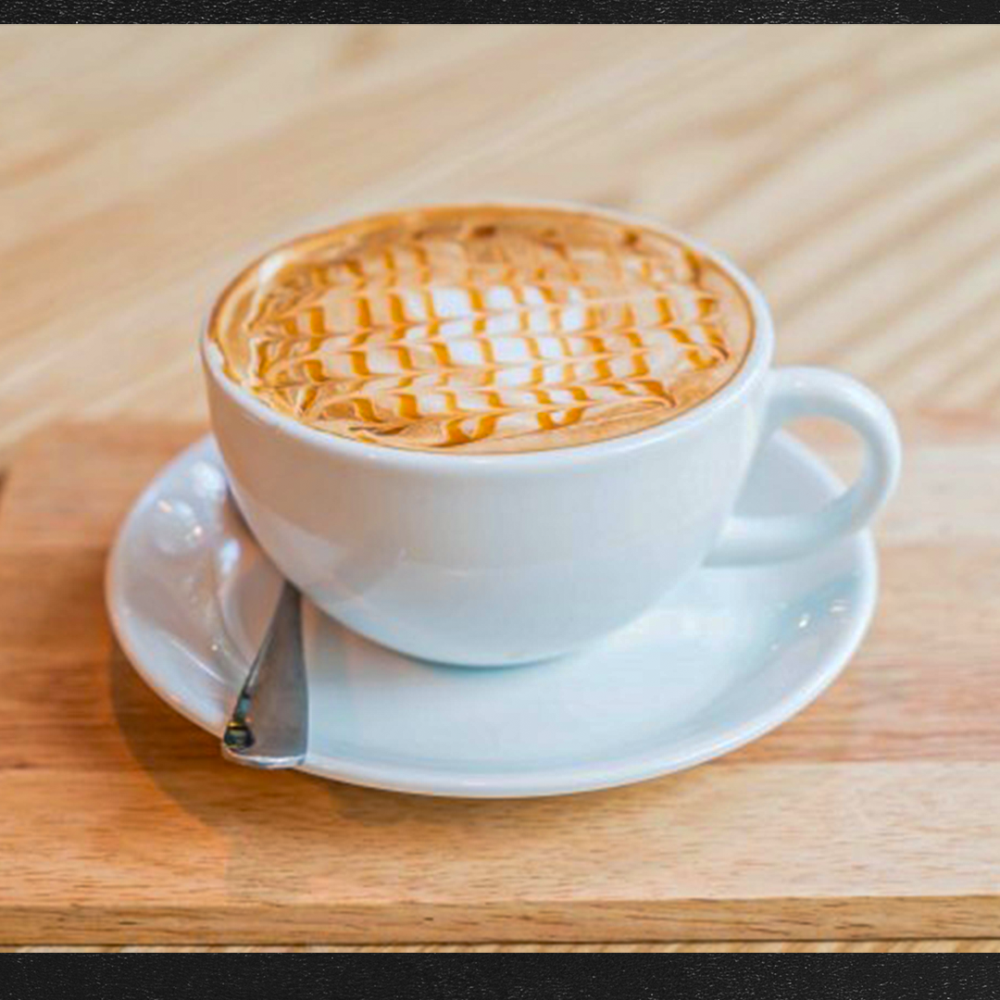
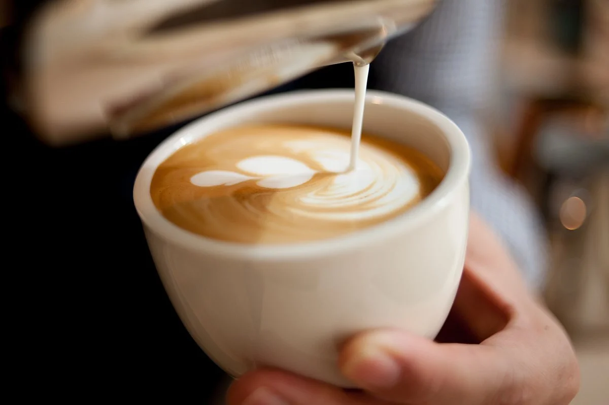
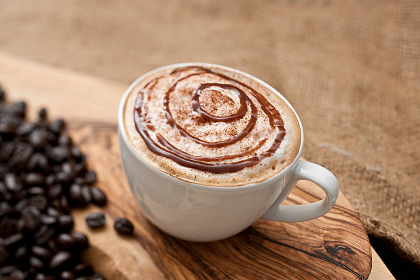
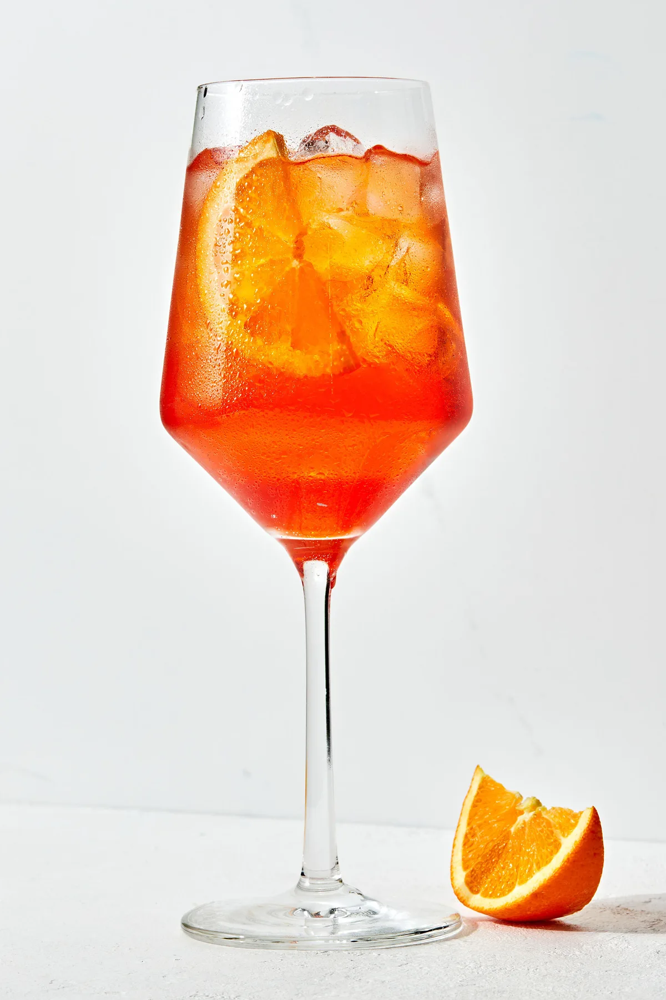
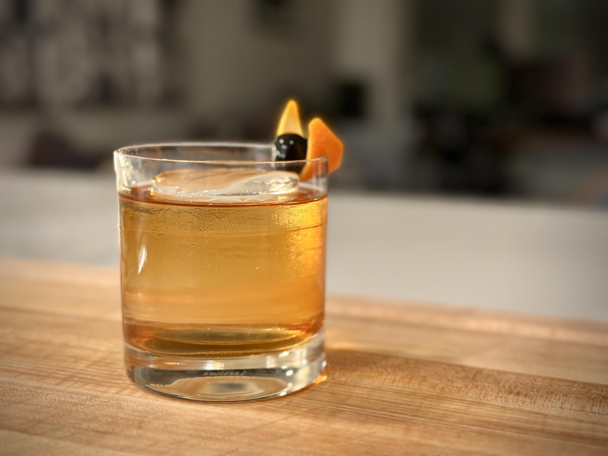
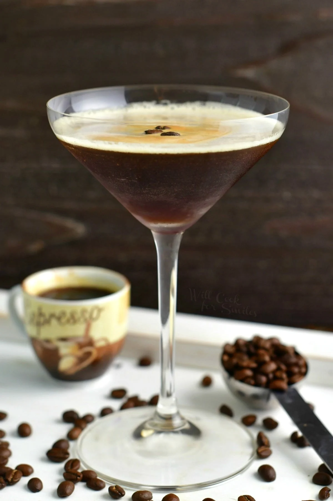
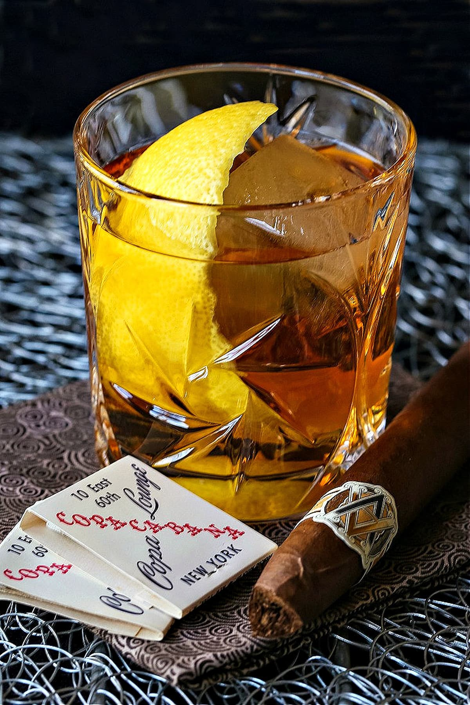
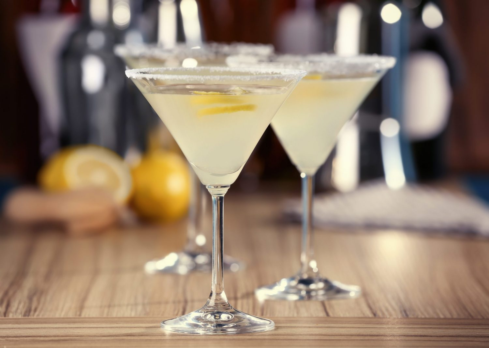
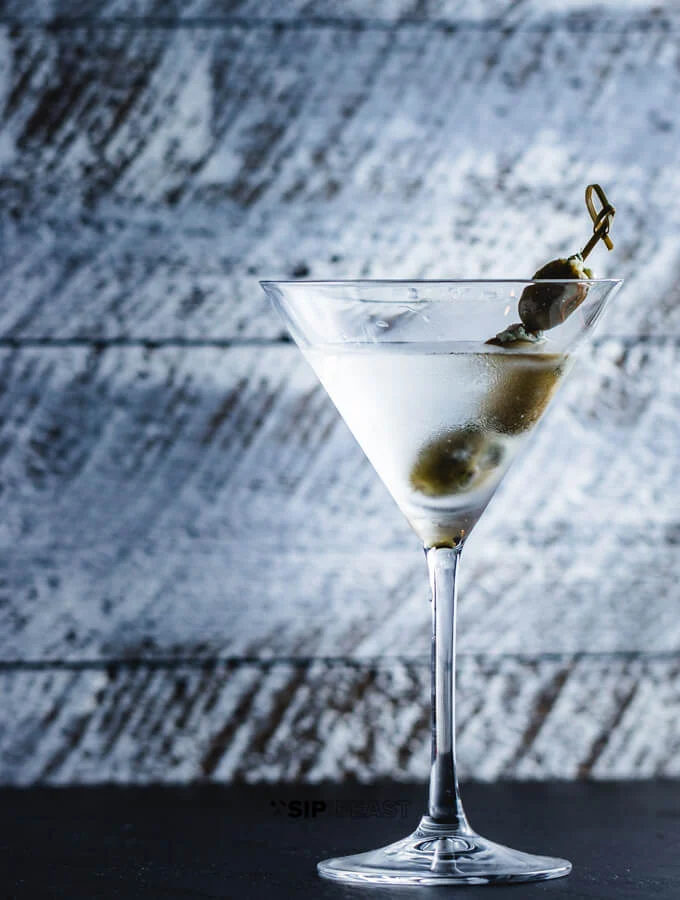

Recipes
Coffee & Cocktails
COFFEE
Espresso

Ratio: 1 shot of espresso, 2 oz in an Espresso Cup
Americano
 Ratio: 1 shot of espresso + 3 oz. of hot water, served in a Coffee MugCaramel Macchiato
Ratio: 1 shot of espresso + 3 oz of steamed milk + 2 pumps of caramel syrup + caramel drizzle, served in a Coffee Mug
Cappuccino

Ratio: 1 1/2 shots of espresso + 2 oz. of steamed milk + 2 oz. of foamed milk, served in a Coffee Mug
Cafe Latte
Ratio: 1 1/2 shots of espresso + 6 oz of steamed milk + 1 cm of foam, served in a Coffee Mug
Mocha
Ratio: 1 1/2 shots of espresso + 2 oz of steamed milk + 1 tbsp chocolate powder + 2 cm of milk froth, served in a Coffee Mug
Affogato

Ratio: 1 shot of espresso + 1 scoop of vanilla gelato, served in an old fashioned glass.
Iced Coffee

Ratio: 1 1/2 shots of espresso + 1 oz agave, over ice in a highball glass, milk to fill glass
COCKTAILS
Aperol Spritz
Ratio:
2 oz Aperol
3 oz prosecco
1 oz apricot juice
1 oz club soda
INSTRUCTIONS:
Add all ingredients but prosecco to a red wine glass, add ice, mix, add prosecco to top off *garnish with orange
Chocolate Orange Old Fashioned
Ratio:
2 oz Bulleit Bourbon
2 dashes agave
2 dashes chocolate bitters
INSTRUCTIONS:
Prepare old fashioned glass with ice sphere, pour all ingredients into an old fashioned mixing glass, add a scoop of ice, mix with a bar spoon 15 rotations, strain over ice sphere. *garnish with one cherry and orange peel
Espresso Martini
Ratio:
2 oz Belvedere
1 oz Espresso
1/2 oz Kahlua
1/2 oz Agave
INSTRUCTIONS:
Chill a martini glass by adding a scoop of ice and fill with water, set aside, add all ingredients to a cocktail shaker and add a scoop of ice, shake vigorously in a horizontal motion over your shoulder 15 times, empty ice water from chilled martini glass and strain into glass over a sieve, *garnish with 6 coffee beans.
The Godfather
Ratio:
2 oz Glenfiddich Scotch
1/2 oz Amaretto Disaronno
INSTRUCTIONS:
Prepare old fashioned glass with ice sphere, pour all ingredients into an old fashioned mixing glass, add a scoop of ice, mix with a bar spoon 15 rotations, strain over ice sphere. *garnish with lemon peel
Lemon Drop Martini
Ratio:
2 oz Tito's Vodka
1 oz Limoncello
1 oz Agave
1/2 oz fresh lemon juice
INSTRUCTIONS:
Chill a martini glass by adding a scoop of ice and fill with water, set aside, add all ingredients to a cocktail shaker and add a scoop of ice, shake vigorously in a horizontal motion over your shoulder 15 times, empty ice water from chilled martini glass and strain into glass over a sieve.
Classic Martini
Ratio:
2 1/2 oz Vodka
1/2 oz olive brine
INSTRUCTIONS:
Chill a martini glass by adding a scoop of ice and fill with water, set aside, add all ingredients to a cocktail shaker and add a scoop of ice, shake vigorously in a horizontal motion over your shoulder 15 times, empty ice water from chilled martini glass and strain into glass over a sieve, serve with three olives on a pick.